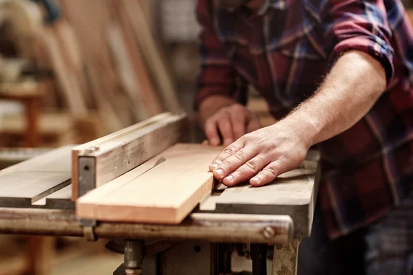

Sierra de banco y sierra circular: Para cortes rectos y precisos en distintos tipos de madera.
Lijadora eléctrica y orbital: Logran terminaciones suaves y profesionales en todas las superficies.
Cepillo eléctrico y manual: Para nivelar, alisar y dar forma a la madera.
Fresadora: Ideal para realizar ranuras, molduras y acabados detallados.
Taladro y atornillador: Herramientas esenciales para el armado y fijación de piezas.
Escofinas, formones y martillos: Elementos clásicos que permiten el trabajo fino y artesanal.
Prensas y sargentos: Usados para sujetar firmemente las piezas mientras se trabaja o se encola.
